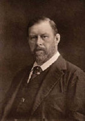

(1847 – 1912)

Korku edebiyatı denince ilk akla gelen karakterlerden biri olan Drakula, aslında tam bir beyefendi ve son derece düzenli bir hayat süren yazar Bram Stoker tarafından yaratılmıştır. Yazar sonraları başka romanlar kaleme alsa da onu edebiyatın devleri arasına sokan karakter, "karanlığın efendisi Drakula" olmuştur.
En çok bilinen ve okunan romanlardan biri olan Drakula'nın yazarı Abraham "Bram" Stoker 1847'de, İrlanda'nın Dublin kentinde, yedi çocuklu bir ailenin oğlu olarak dünyaya geldi. Yaşamının ilk yıllarında hiçbir doktorun teşhis edemediği bir nedenden ötürü yatalak hasta idi. Sekiz yıl sonra bir gün ayağa kalktı, yürümeye başladı. Zamanla vücudu gelişti ve Dublin Trinity College'ın en çok ödül alan sporcusu oldu.
Babası tiyatro tutkunu, orta halli bir devlet memuruydu. Öğrenimi bittikten sonra Abraham da 1890'da devlet memuru oldu. Aynı zamanda bu yıllarda, başyapıtı Drakula'yı yazmaya başladı. On yıl bu görevi sürdürürken ücret talep etmeksizin tiyatro eleştirileri yazarak babasının merakını da sürdürdü. Nihayet 1876'da yazdığı bir yazı ile dönemin ünlü oyuncusu Henry Irving tarafından keşfedildi. İki yıl sonra devlet memurluğundan istifa ederek Londra'ya yerleşti. Yazar burada aralarında Oscar Wilde, Arthur Canon Doyle ve William Butler Yeats'in de bulunduğu birçok sanatçı dost edindi.
Irving'in yanında çalışıp sahne amirliğinden özel sekreterliğe yükseldi ama yazarlığı da bırakmadı. 1897'de Drakula romanını baskıya verdi. (Yayıncılar romanı çok uzun bulduğu için romandan çıkarttığı giriş bölümü, Dracula'nın Konuğu ilk basımlarda yer almamıştır. Stoker'ın ölümünden sonra eşi bu bölümü yayınlamıştır.)
Bu roman çok tutulunca zaten acemi bir yazar olmayan Stoker, hayatının geri kalanını bir edebiyatçı olarak geçirdi, evlendi ve çok sevdiği dostu Henry Irving'in yanından ayrılmadı.
Stoker kontrollü, ciddi, kültürlü, yetenekli biridir. Davranışları ve dış görünüşü ile Victoria çağını temsil eden bir centilmendir. Aynı zamanda maceraperest, heyecanlı ve tutkuludur da. Bunun en güzel örneği, Thames Nehri'nde sandalı ile gezerken sulara atlayan birini görüp hemen suya atlaması ve erişip sahile çıkarmasıdır. Bu kişinin hayatını kurtaramasa da bu olaydaki cesaretinden ötürü bir bronz madalya ile ödüllendirilmiştir.
1975'te ilk kez yayımlanan Bram Stoker'ın biyografisinde (A Biography of Bram Stoker) Daniel Farson yazarın özel yaşamını, eşiyle olan fırtınalı ilişkilerini açıklar. Biyografiye göre güzelliği ile nam salan Bayan Stoker, ilk çocuklarından sonra yatak odasının kapılarını Bram Stoker'a kapar. Stoker da –çoğu fahişelerle olmak üzere– birçok evlilik dışı ilişki yaşar. Bram Stoker 20 Nisan 1912'de frengiden ölmüştür.
Seçme Romanları: Drakula (1897 – Kara Kedi Yayınları, 2010), Beyaz Ejderhanın Yuvası (1911 – Seyhan Kitap, 2006)